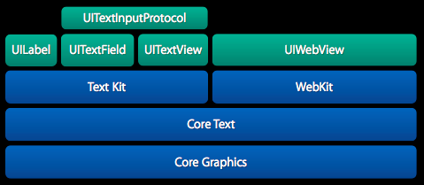
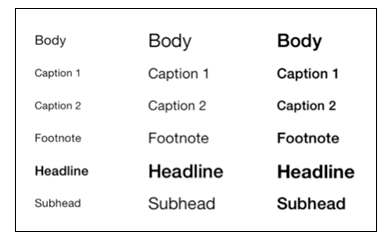

Text Kit指的是UIKit框架中用于提供高质量排版服务的一些类和协议，它让程序能够存储，排版和显示文本信息，并支持排版所需要的所有特性，包括字距调整、连写、换行和对齐等。

居于coreText，支持分页文本、文本包装、富文本编辑、交互式文本着色、文本折叠和自定义截取等特性。
UITextView，UITextField、UILabel都已经基于Text Kit重新构建
textKit 可以做到：
*动态字体（Dynamic type）
*凸版印刷体效果（Letterpress effects）
*路径排除（Exclusion paths）
*动态文本格式化和存储（Dynamic text formatting and storage）
下面我们分别分别说说textKit的这4个用法
根据用户在 设置-->通用-->字体大小里面的设置，程序自动调整字体的大小以及样式，当用户调整字体大小时，会向所有的应用发送 UIContentSizeCategoryDidChangeNotification 的通知。
self.textView.font = [UIFont preferredFontForTextStyle:UIFontTextStyleBody];
[[NSNotificationCenter defaultCenter] addObserver:self
selector:@selector(preferredContentSizeChanged:)
name:UIContentSizeCategoryDidChangeNotification
object:nil];
-(void)preferredContentSizeChanged:(NSNotification *)notification{
self.textView.font = [UIFont preferredFontForTextStyle:UIFontTextStyleBody];
}
当前支持的字体种类有六中

UIFontTextStyleHeadline
UIFontTextStyleBody
UIFontTextStyleSubheadline
UIFontTextStyleFootnote
UIFontTextStyleCaption1
UIFontTextStyleCaption2
为字体加上阴影和高光的效果
NSDictionary *attributes = @{
NSForegroundColorAttributeName: [UIColor redColor],
NSFontAttributeName: [UIFont preferredFontForTextStyle:UIFontTextStyleHeadline],
NSTextEffectAttributeName: NSTextEffectLetterpressStyle
};
self.titleLabel.attributedText = [[NSAttributedString alloc] initWithString:@"Title" attributes:attributes];
更多效果，可以查看NSAttributedString 的属性
按照给定的路径，在布局文本的时候绕开路径包含的范围
UIBezierPath *floatingPath = [self pathOfImage];
self.textView.textContainer.exclusionPaths = @[floatingPath];
重点理解textView 的textContainer 属性。
通过规则实现对文本里面的某些文本给予不一样的格式（字体、颜色等）
本博客只是比较粗略的了解了 textKit ，在应用开发中textKit 可以帮助你做更多的事情，让我们边用边